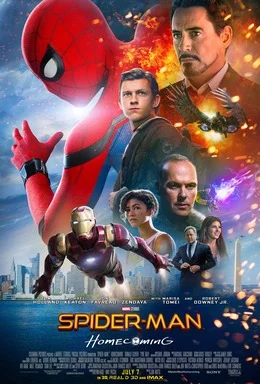
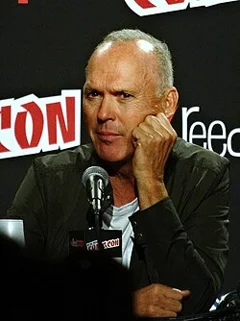
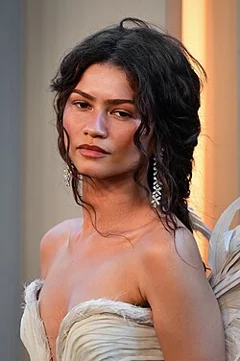
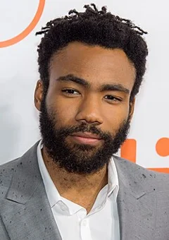
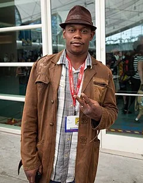
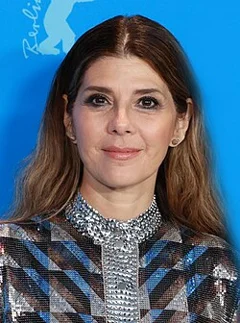

Spider-Man: Homecoming (2017)
| Movie | Release Date | Poster |
|---|---|---|
| Spider-Man: Homecoming PG-13 · 2h 13m · superhero · action |  |
| Trailer |
|---|
| Rotten Tomatoes | Metacritic | IMDb |
|---|---|---|
| 92% | 73/100 | View on IMDb |
| Overview |
|---|
Spider-Man: Homecoming is a 2017 American superhero film based on the Marvel Comics character Spider-Man. Produced by Columbia Pictures, Marvel Studios, and Pascal Pictures, and distributed by Sony Pictures Releasing, it is the second Spider-Man film reboot and the 16th film in the Marvel Cinematic Universe (MCU). Directed by Jon Watts from a screenplay by the writing teams of Jonathan Goldstein and John Francis Daley, Watts and Christopher Ford, and Chris McKenna and Erik Sommers, the film stars Tom Holland as Peter Parker / Spider-Man alongside Michael Keaton, Jon Favreau, Gwyneth Paltrow, Zendaya, Donald Glover, Jacob Batalon, Laura Harrier, Tony Revolori, Bokeem Woodbine, Tyne Daly, Marisa Tomei, and Robert Downey Jr. In the film, Peter tries to balance high school life with being the hero Spider-Man while facing the Vulture (Keaton). Full plot (spoilers)Following the Battle of New York in 2012, Adrian Toomes and his salvage company are contracted to clean up the city, but their operation is taken over by the Department of Damage Control (DODC), a partnership between Tony Stark and the U.S. government . Enraged at being driven out of business, Toomes persuades his employees to keep the Chitauri technology they have already scavenged and use it to create and sell advanced weapons, including a flying Vulture suit Toomes uses to steal Chitauri power cells. Eight years later, after being drafted into the Avengers by Stark to help with an internal dispute in Germany , teenager Peter Parker resumes his studies at the Midtown School of Science and Technology when Stark tells him he is not ready to become a full-time Avenger. Peter quits his school's academic decathlon team to spend more time focusing on his crime-fighting activities as Spider-Man. His best friend, Ned , eventually discovers his secret identity. Peter comes across Toomes's associates Jackson Brice / Shocker and Herman Schultz selling weapons to local criminal Aaron Davis . Peter saves Davis before being caught by Toomes in the Vulture suit and dropped into a lake. He nearly drowns but is rescued by Stark, who warns him against further involvement with the criminals. Meanwhile, Toomes accidentally kills Brice with one of their weapons and Schultz becomes the new Shocker. Peter and Ned study a weapon Brice left behind, and remove its power core. When a tracking device on Schultz indicates he is traveling to Maryland , Peter rejoins the decathlon team and accompanies them to Washington, D.C. for a national tournament. Ned and Peter disable a tracking device Stark implanted in the Spider-Man suit, and unlock its advanced features. Peter tries to stop Toomes from stealing weapons from a DODC truck but is trapped inside, causing him to miss the decathlon tournament. When he discovers that the power core is an unstable Chitauri grenade, he races to the Washington Monument , where the core is activated and explodes, trapping a group of Peter's decathlon teammates in an elevator. Peter breaks inside and saves everyone, including his crush Liz . Days later, Peter captures Toomes's new buyer Mac Gargan aboard the Staten Island Ferry , but Toomes escapes while a malfunctioning weapon tears the ferry in half. Stark arrives and helps Peter save the passengers, but confiscates Peter's suit as punishment for his recklessness. Peter returns to his high school life and asks Liz to the homecoming dance. On the night of the dance, Peter discovers that Toomes is Liz's father, and Toomes deduces that Peter is Spider-Man. After Toomes threatens him, Peter realizes Toomes is planning to hijack a DODC plane transporting weapons from Avengers Tower to the team's new headquarters in Upstate New York. Peter leaves the dance and dons his old homemade Spider-Man suit. He is ambushed by Schultz, but defeats him with Ned's help. Peter races to Toomes's compound, where Toomes attacks him and leaves him to die under a pile of rubble. Peter finds the strength to escape and intercepts the plane, steering it to crash on the beach at Coney Island . He and Toomes fight, with Peter eventually saving Toomes's life after the damaged Vulture suit explodes. Peter leaves Toomes for the police. Following Toomes's arrest, Liz moves away and Peter declines an invitation from Stark to join the Avengers full time. Back in his bedroom, Peter puts on the Spider-Man suit that Stark returned to him, just before his aunt May walks in. In a mid-credits scene , an incarcerated Gargan approaches Toomes in prison. He says he heard that Toomes knows Spider-Man's real identity, but Toomes denies this. |
| Actor | Character | Photo |
|---|---|---|
| Tom Holland | Peter Parker / Spider-Man A 15-year-old who gained spider-like abilities after being bitten by a radioactive spider. |  |
| Michael Keaton | Adrian Toomes / Vulture A salvager-turned-arms-trafficker after his company is forced out of business. |  |
| Jon Favreau | Happy Hogan The former head of security for Stark Industries and Tony Stark's driver and bodyguard. |  |
| Gwyneth Paltrow | Pepper Potts Tony Stark's fiancée and the CEO of Stark Industries. | |
| Zendaya | Michelle One of Peter's classmates, also known as "MJ". |  |
| Donald Glover | Aaron Davis A criminal looking to purchase weapons from Toomes. |  |
| Jacob Batalon | Ned Peter's best friend, who is a "complete gamer". |  |
| Laura Harrier | Liz A senior, Peter's love interest, and Toomes's daughter, with a "type-A" personality . | |
| Tony Revolori | Flash Peter's rival and classmate. |  |
| Bokeem Woodbine | Herman Schultz / Shocker An accomplice of Toomes who is the second person to use modified, vibro-blast shooting versions of Brock Rumlow 's gauntlets. |  |
| Tyne Daly | Anne Marie Hoag The head of the U.S. | |
| Marisa Tomei | May Parker Peter's aunt. |  |
| Robert Downey Jr. | Tony Stark / Iron Man A self-described genius, billionaire, playboy, philanthropist, and an Avenger with electromechanical suits of armor of his own invention who is Peter's mentor and the creator of the U.S. |  |
| Martin Starr | Roger Harrington / Mr. Harrington | No photo |
| Abraham Attah | Abraham Brown / Abe | No photo |
| Selenis Leyva | Ms. Warren / Ms. Warren | No photo |
| Logan Marshall-Green | Jackson Brice / Jackson Brice/Shocker #1 | No photo |
| Michael Mando | Mac Gargan / Mac Gargan | No photo |
| Garcelle Beauvais | Doris Toomes / Doris Toomes | No photo |
| Tiffany Espensen | Cindy Moon / Cindy | No photo |
| Angourie Rice | Betty Brant / Betty | No photo |
| Michael Chernus | Phineas Mason / Phineas Mason/The Tinkerer | No photo |
| Martha Kelly | Tour Guide | No photo |
| Jona Xiao | – | No photo |
| Stan Lee | Watcher Informant / Gary | No photo |
| Chris Evans | Steve Rogers / Steve Rogers/Captain America | No photo |
| Hannibal Buress | Coach Wilson / Coach Wilson | No photo |
| Kenneth Choi | Principal Morita / Principal Morita | No photo |
| Gary Weeks | Foster / Agent Foster | No photo |
| Josie Totah | Seymour / Seymour | No photo |
| Amy Hill | Decathlon Moderator | No photo |
| Christopher Berry | Randy Vale / Randy | No photo |
| Jorge Lendeborg Jr. | Jason Ionello / Jason | No photo |
| Tunde Adebimpe | Mr. Cobbwell / Mr. Cobbwell | No photo |
| Isabella Amara | Sally Avril / Sally | No photo |
| Michael Barbieri | Charles Murphy / Charles | No photo |
| Hemky Madera | Mr. Delmar / Mr. Delmar | No photo |
| Zach Cherry | Street Vendor | No photo |
| Kirk Thatcher | Punk on Street | No photo |
| Yu Lew | Car Jacker | No photo |
| Sondra James | Yelling Woman | No photo |
| Bob Adrian | Yelling Man | No photo |
| Gary Richardson | Day Sleeper | No photo |
| Joe Hang | Thai Waiter | No photo |
| Wayne Pére | History Teacher | No photo |
| Alexa Laraki | Tent Kids | No photo |
| Liza Fagin | Tent Kids | No photo |
| John Penick | Mr. Hapgood / Mr. Hapgood | No photo |
| Ethan Dizon | Brian McKeever / Tiny | No photo |
| Miles Mussenden | Park Ranger | No photo |
| Kevin LaRosa Jr. | Helicopter Pilot | No photo |
| Ren Colley | Ferry Kid | No photo |
| Jennifer Kim | Ferry Mom | No photo |
| Ari Groover | Ferry Commuters | No photo |
| Louis Gonzalez | Ferry Commuters | No photo |
| Stewart Steinberg | Ferry Commuters | No photo |
| Andy Powers | Ferry Commuters | No photo |
| Omar Capra | Yeah Spider-Man Guy | No photo |
| Nitin Nohria | Dean Crimson | No photo |
| Vince Foster | Stark Tower Technician | No photo |
| Brian Schaeffer | Stark Tower Employee | No photo |
| Jennifer Connelly | Karen / Karen/Suit Lady | No photo |
| Kerry Condon | Features of the Marvel Cinematic Universe / Voice of Friday | No photo |
| Detail | Value |
|---|---|
| Directed by | Jon Watts |
| Written by | John Francis Daley, Jonathan Goldstein, Jon Watts, Christopher Ford, Chris McKenna, Erik Sommers |
| Produced by | Kevin Feige, Amy Pascal |
| Music by | Michael Giacchino |
| Cinematography | Salvatore Totino |
| Edited by | Dan Lebental |
| Production companies | Marvel Studios, Columbia Pictures |
| Distributed by | Sony Pictures, InterCom, Netflix |
| Running time | 133 minutes |
| MPAA rating | PG-13 |
| Budget | $175 million |
| Box office | $880 million |
Overview, plot, and cast descriptions are from Wikipedia (CC BY-SA 4.0). Credits, ratings, and box office are from Wikidata.